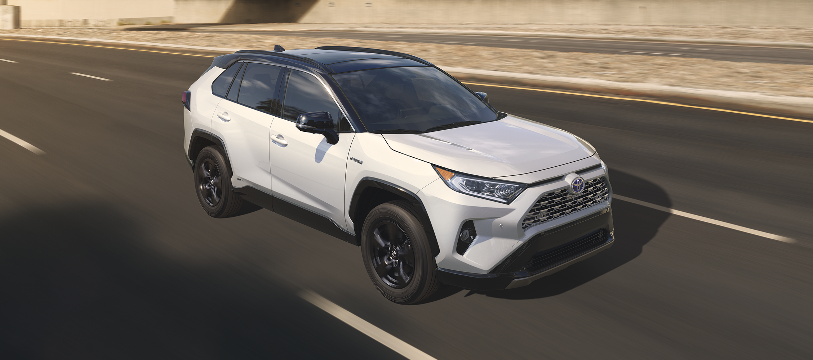
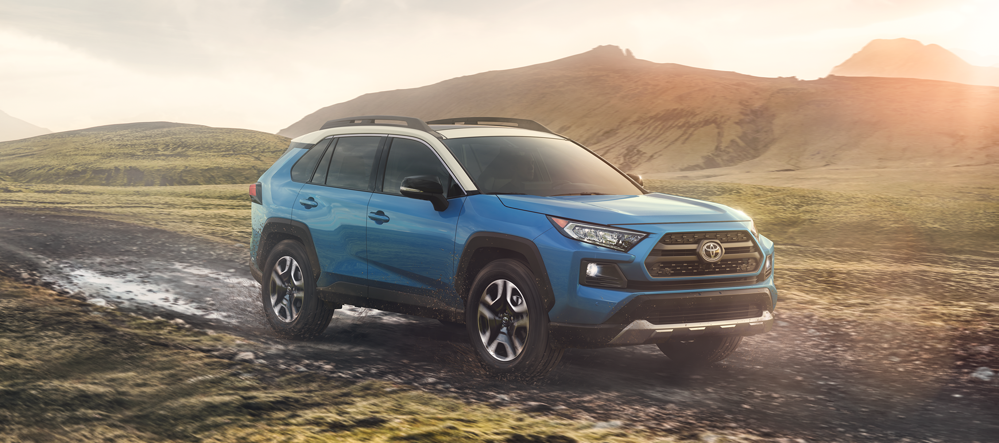

The all new 2019 Toyota RAV4.
All the stops have been pulled for the world debut of the all-new 2019 Toyota RAV4. The vehicle that created the small sport utility vehicle (SUV) segment makes its fifth-generation debut at the New York International Auto Show.
Over the years, Toyota has listened to owners and dealers and it has paid off. Over the last five years, RAV4 volume has doubled, which speaks profoundly to the segment’s attractiveness and growth, and ultimately, RAV4’s popularity. RAV4 currently ranks as the number-one-selling vehicle in the Toyota lineup, as well as the best-selling non-pickup-truck in the country.
No matter the grade, every RAV4 is a winning choice, whether it’s for a city exploration, a weekend trip to the countryside, or a jaunt on the trails. When it becomes available in the winter at the end of 2018 (with hybrid models right behind in early 2019), we predict that the all-new RAV4 will premiere, yet again, at the forefront—both for the Toyota brand and the segment.
Get Up and Go!
For the all-new RAV4, designers kept in mind design elements of
Adventure and
Refined to allow owners to get up and go in their RAV4, no matter the time or place. An emphasis was placed on maximizing the presence of a small SUV while maintaining high levels of finesse inside and out.
Each body panel has a sophisticated twist to it, with a chiseled appearance that is a perfect combination of athleticism and charisma. The stronger nose leads into a more dynamic profile, robust shoulders, and available 19-inch wheels, making for a powerful stance ready to tackle any road, any time.
The implementation of the TNGA platform allows RAV4 to adopt the charisma of a bolder and tougher SUV, but in a package that is lower and wider. The longer wheelbase and wider front and rear tracks provide a stable, confident driving platform. For off-road prowess, the shorter front and rear overhangs will aid in RAV4’s ability to overcome rugged terrain.
The unibody chassis is 57 percent more rigid than the outgoing version. RAV4 incorporates an optimally tuned multi-link rear suspension, providing ideal damping for handling, minimum interior cabin noise, and the utmost ride comfort. Ground clearance has been increased by more than half an inch, yet RAV4 is able to achieve improved aerodynamics.
The relocated side mirrors are now positioned lower on the door for increased forward visibility around the A-pillar. Side visibility is increased thanks to a lowered beltline and the redesigned and enlarged rear-quarter glass assists with rear-diagonal visibility.
| 2019 RAV4 LIMITED PRELIMINARY EXTERIOR DIMENSIONS (vs. 2018) [difference] |
| Wheelbase |
105.9 in. (104.7 in.) [+1.2 in.] |
| Overall Length |
180.9 in. (181.1 in.) [-0.2 in.] |
| Overall Width |
73 in. (72.6 in.) [+0.4 in.] |
| Overall Height |
66.9 in. (67.1 in. *with roof rail) [-0.2 in.] |
Unparalleled Driving Experience with More Power, MPG and Capabilities
Engineers worked for about four years to fine-tune every aspect of RAV4’s performance, handling stability and ride comfort. The end goal was simple: engineer a driving experience that is
Confident and
Natural.
This unmatched performance was realized thanks to a group of
takumi—highly-trained master craftsmen—who strived to develop a vehicle that acts and reacts as the driver intends, even in extreme weather and road conditions. Including the
takumi in the development process was just another layer of enhancement to the overall design approach led by the Toyota New Global Architecture (TNGA) philosophy. These master craftsmen focused on working together to improve vehicle performance at various stages of the development process to deliver an ever-better RAV4.
The power source for RAV4’s driving abilities comes from one of two powertrains:
- Dynamic Force 2.5-liter inline-four-cylinder engine with VVT-iE mated to an 8-speed Direct-Shift Automatic Transmission, which motivates the five gas models
- Dynamic Force 2.5-liter inline-four-cylinder Toyota Hybrid System II (THS II) engine with Electronically-Controlled Continuously-Variable Transmission (ECVT), which activates the four hybrid models
The
takumi were precise with the development of RAV4’s structure and configuration to achieve an increase in performance as a whole. The engine utilizes high-speed combustion technology and a variable control system for greater thermal efficiency output, which reduces energy losses associated with exhaust and cooling systems and the movement of mechanical parts, among other factors. With a 40-percent thermal efficiency (41 percent for hybrids), the 2.5-liter 4-cylinder Dynamic Force Engine is the ideal powerplant for the all-new RAV4 to meet the demand of providing a highly responsive, yet fuel efficient driving experience. The Direct Shift-8AT transmission provides direct lock-up from gears two through eight to eliminate power loss from the torque converter, executing ideal smooth shifts.
The Toyota-first, Dynamic Torque Vectoring All-Wheel Drive with Rear Driveline Disconnect, is nothing short of impressive, and enables drivers to steer the vehicle as intended, even atop the toughest of roads.
Standard on AWD-equipped Limited gas and Adventure grade models, Dynamic Torque Vectoring All-Wheel Drive with Rear Driveline Disconnect can send 50 percent of engine torque to the rear wheels, plus distribute it to the left or right rear wheel for improved handling. When AWD isn’t required (on long stretches of highway, for example), RAV4 can achieve better fuel economy thanks to the Rear Driveline Disconnect system. The disconnection features the world’s first ratchet-type dog clutches on both the front and rear wheel shafts. These clutches stop the driveshaft’s rotations, thus transmitting the driving force to the front wheels when AWD isn’t required, significantly reducing energy loss, improving fuel efficiency, and reducing rotational vibration making for a smoother ride.
This all-new AWD system is one of three available on the all-new RAV4; it joins the AWD-i system available on hybrid grades and the (non-Dynamic Torque Vectoring) AWD system available on core gas grades.
When paired with the new All-Wheel Drive with Intelligence (AWD-i), RAV4 Hybrid increases the total torque to the rear wheels—which is electronically driven—by 30 percent compared to the current generation AWD-i system. By adopting a new control system that optimally distributes torque to the rear wheels based on the driving conditions, the new AWD-i system offers high off-road performance, handling, and ability.
RAV4’s unparalleled driving experience is just one of the ways the all-new RAV4 exceeds expectations for owners, the segment, and the industry.
XSE Hybrid: The Sportiest RAV4

For those who prefer sportier driving dynamics, XSE Hybrid stays ready with the perfect conflation of sport and utility. XSE is an all-new addition to RAV4’s Hybrid family.
The piano-black accents across the front end, mirror caps, fender arches, and lower rockers set the stage for XSE Hybrid’s sporty appeal. Unique to RAV4 Hybrids, projector-beam LED headlamps flank each side of the grille (on XLE and above) for a brighter, sharper, and ideally angled light source.
Standard on all RAV4 Hybrid models, the Toyota Hybrid System II (THS II) works in sync with the 2.5-liter 4-cylinder Dynamic Force Engine for an impressive balance of energy efficiency and supreme power output. Performance-wise, XSE Hybrid is truly the “no compromise” grade thanks to its enhanced power and acceleration. When paired with its sport-tuned suspension having tauter shock absorbers and springs, RAV4 XSE Hybrid takes the throne as the quickest—and best-handling—RAV4 in the lineup.
While driving thrills behind XSE Hybrid’s steering wheel are standard, that’s not all guests get: In any RAV4 Hybrid, drivers can look forward to anticipated class-leading fuel efficiency and increases in horsepower and acceleration, respectively.
On- and Off-Road Fun
For explorers looking to satisfy their outdoorsy cravings, RAV4 Adventure has the capabilities for all types of off-road fun.
RAV4 Adventure is distinguishable among the other grades with its standard high-rise roof rails and large over-fenders. Inspired by Toyota’s off-road vehicle heritage, RAV4 Adventure grade has a more rugged exterior, thanks in part to its more aggressive grille, fog light surrounds, and unique wheel design. It answers the call designers had of
Robust with its stout stance, standard Dynamic Torque Vectoring All-Wheel Drive with Rear Driveline Disconnect, and a reliable and tough functionality that’s apt for any road.
The fun ratchets up once pavement blends into dirt thanks to Multi-Terrain Select. Standard on all AWD-equipped gas RAV4 models, Multi-Terrain Select gives drivers the ability to maximize traction when driving through snow, mud, sand, or rocks. The system is easy to use thanks to a control dial (or buttons) positioned in the center console to the left of the shift knob.
Two-Tone Magnetism
RAV4 XSE Hybrid’s striking personality screams sporty, thanks to its standard two-tone exterior paint scheme. The black roof is paired with either Blizzard Pearl, Silver Sky Metallic, Magnetic Gray Metallic, or Blueprint (a new color to the palette). RAV4 XSE Hybrid’s exclusive interior comes mono-spec with black Softex material and blue accents throughout.
RAV4 Adventure grade can be had with an Ice Edge-colored roof that is paired with one of three exterior colors: Midnight Black Metallic or Blue Flame, both of which are new for RAV4; or Lunar Rock, an all-new color to the Toyota lineup that makes its first mission on RAV4. Inside, interior seat finishes come in either black or a grade-exclusive, Mocha-colored Softex, with the latter being a brand-new interior finish in the Toyota lineup. Orange stitching accents the interior with additional orange appointments placed throughout the dashboard.
RAV4 keeps admirers star-struck even when its fitted with additional full-body color options like Super White and Ruby Flare Pearl.
Premium Limited Style
Blissful weekend retreats are the ideal destination when behind the wheel of RAV4 Limited. As the top grade, drivers and passengers will enjoy amenities and features befitting its premium style. At first glance, RAV4 Limited’s 19-inch alloy wheels and chrome accents set it apart from the other grades. Once inside though, Limited’s essence truly takes the stage.
Standard features include a front-row moonroof and 8-way power-adjustable driver’s seat with memory and 2-way lumbar support. Tech-wise, RAV4 Limited comes standard with a newly-designed 7-inch Multi-Information Display (MID) and, for the first time in a Toyota vehicle in North America, a Digital Display Rearview Mirror. By default, the display is a conventional rearview mirror but with the flip of a switch, drivers have an increased field of vision coming through the rearview mirror, displaying what is behind the vehicle thanks to a high-mounted, adjustable wide-angle, high-definition camera affixed on the rear of vehicle.
Optional content that enhances the ambiance includes ventilated front seats, heated rear seats, and a panoramic moonroof. When the weekend’s gear fills both hands, the available hands-free power liftgate helps considerably by opening with a wave of the foot below the rear bumper.
Elevated Cabin Atmospheres
Designers applied the theme of
Refined to every detail of the interior cabin, resulting in an impressive arrangement that suits a wide variety of driving experiences and preferences. The interior atmosphere represents an elevated sophistication with a premium, modern design and uncomplicated layout.
Between front passengers sits a center console having a repositioned standard Electronic Parking Brake (EPB) for easier accessibility. Ergonomics have been further enhanced by an increase in the console’s volume, side-by-side cup holders, and an open tray capable of holding small items, with optional Qi wireless charger. The in-dash tray within arm’s reach of front passengers will see its share of electronics, sunglasses, and travel must-haves. A standard smooth boot adorns the top of the shifter, and the HVAC knobs in the center panel are redesigned for improved tactility.
Rear seat passengers will appreciate the spacious back cabin thanks to an increase in left and right couple distance, as well as legroom. The rear cargo area adopts a reversible liner as well as side nets for storing small items and the 60/40 folding rear seats are ready to accommodate essentials like surf boards, suitcases, or camping gear.
Advanced Media with Precise Harmony

Every RAV4 is equipped with Entune 3.0 multimedia including Wi-Fi Connect powered by Verizon, hands-free access to Amazon Alexa, and Apple CarPlay compatibility.
The standard Entune 3.0 audio system houses a 7-inch touchscreen that is perched atop the center stack. Entune 3.0 Audio Plus adds an eight-inch touchscreen and Sirius XM Radio. Entune 3.0 Premium Audio enhances the multimedia system with embedded dynamic navigation to help drivers chart their course.
Enhancing onboard multimedia features, RAV4 can be had with up to five USB ports between the front and rear rows and an optional Qi wireless charging tray positioned at the front of the center console.
RAV4’s multimedia setup is complemented by an all-new available JBL audio system. The next-generation premium audio setup incorporates an enhanced system architecture, new speaker design, and an improved tuning process. The result is an all-access pass to the most intimate music concert, all from inside a RAV4.
The available JBL audio system provides harmonious audio via 11 speakers across 8 channels at 800 watts:
- Two Horn Tweeters
- Located in the A-pillar for optimal high-frequency performance
- HiD8 Amplifier
- Next-generation amplifier powering the 800 watts
- Two Wide Dispersion Instrument Panel Speakers
- Providing greater sound and alert functionality
- Two Wide Dispersion Front Door Speakers
- Enhanced sound quality for front passengers
- Ported Subwoofer with Enclosure
- More powerful deep-bass response tucked away in the rear quarter
- Two Full Range Rear Door Speakers
- Enhanced sound quality for rear passengers
- Clari-Fi Technology
- Intelligently adjusts to every audio format to match source quality with the precise level of audio restoration necessary
Next Generation of Toyota Safety Sense (TSS)
Toyota continues to lead the pack when it comes to safety, and the all-new RAV4 provides drivers and passengers with standard safety technologies that help move Toyota one step closer to achieving the ultimate goal of zero casualties from traffic accidents.
RAV4 comes standard with TSS 2.0, the second generation of Toyota Safety Sense (TSS). The updated safety package adds new active-safety technologies and capabilities that enhance protection.
Breakdowns of each technology are as follows:
- Pre-Collision System with Pedestrian Detection (PCS w/PD):
- Capability to detect a preceding vehicle or pedestrian in daytime or with better low-light recognition capabilities, or daytime bicyclist (new), and alert the driver (audible and visual warnings) and/or apply brakes to help mitigate or avoid the collision in certain cases (using Forward Collision Warning (FCW), Brake Assist (BA), and Automatic Emergency Braking (AEB)).
- Full-Speed Range Dynamic Radar Cruise Control (DRCC):
- For highways/freeways only – an adaptive cruise control that functions at speeds between 0 to 110 mph and enables low-speed speed matching, stopping, and acceleration/deceleration relative to a preceding vehicle traveling at a slower speed. Speed, cut-in, and distance control enhanced, as well as Turn Signal Linked control added, for a more natural response.
- Lane Departure Alert with Steering Assist (LDA w/SA):
- Newly added to LDA w/SA is the capability, under some circumstances, to detect the road’s edge, in addition to the pre-existing capability to detect visible lane markers and the vehicle’s position in the lane. If unintentional lane deviation is detected, the system alerts the driver with audible and visual warnings. Steering Assist can provide small corrective steering inputs to help the driver prevent the vehicle from unintentionally leaving its lane.
- Automatic High Beam (AHB):
- Capability to automatically activate and deactivate high beams based on driving environment and preceding vehicle’s lights.
- (NEW) Lane Tracing Assist (LTA):
- For highways/freeways only and can be enabled when using DRCC – Capability to recognize white or yellow lane markings or the path of a preceding vehicle if lane markers are temporarily unavailable; to identify and actively track the center of the lane by providing steering assistance to the driver (hands-on, driver-assist system). Reduces driver burden and supports safe driving, especially in traffic congestion or long highway trips. The LTA system can be turned on/off.
- (NEW) Road Sign Assist (RSA):
- Capability to identify certain Stop, Yield, Do Not Enter and Speed Limit signs and display a warning (visual and audible alerts). Alerts vary based on sign type and are displayed on the Multi-Information Display.
Eight airbags come standard on the 2019 RAV4, and so does Toyota’s Star Safety System, which includes Enhanced Vehicle Stability Control (VSC), Traction Control (TRAC), Electronic Brake-force Distribution (EBD), Brake Assist (BA), Anti-lock Braking System (ABS), and Smart Stop Technology (SST). Available safety technologies include Blind Spot Monitor (BSM) with Rear Cross Traffic Alert (RCTA), Bird’s Eye View Camera, Intelligent Clearance Sonar (ICS), and Rear Cross Traffic Braking (RCTB) system. RAV4 comes equipped with a standard backup camera and standard Electronic Parking Brake (EPB).